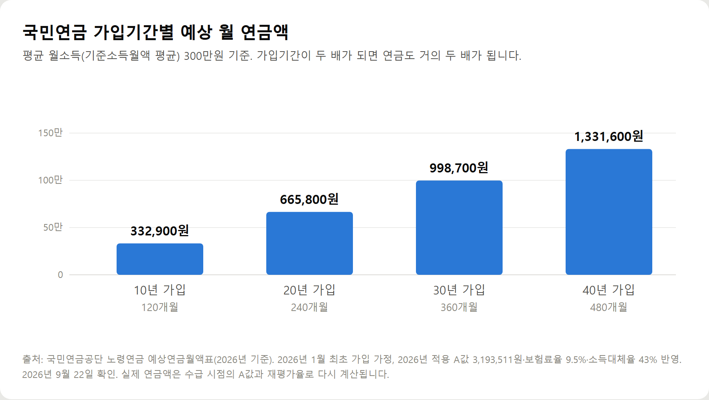

<meta charset="utf-8">
<title>국민연금 예상수령액, 2026년 공식표로 본 10·20·30·40년 가입 시 월 수령액 — 나의 투자 그리고 행복한 여행</title>
<meta name="description" content="국민연금 예상수령액을 2026년 공식 예상연금월액표로 정리했습니다. 가입기간 10·20·30·40년 월 수령액, 출생연도별 수령나이, 조기수령 30% 감액과 연기연금 36% 증액, 추납·임의가입 조건까지 2026년 9월 기준.">
<meta name="viewport" content="width=device-width, initial-scale=1">
<link rel="canonical" href="https://worldtraveler1.tistory.com/107">
<link rel="preconnect" href="https://fonts.googleapis.com">
<link rel="preconnect" href="https://fonts.gstatic.com" crossorigin>
<link rel="stylesheet" href="https://fonts.googleapis.com/css2?family=Hahmlet:wght@400;600;800&family=IBM+Plex+Mono:wght@400;500&family=IBM+Plex+Sans+KR:wght@300;400;500;600&display=swap">

<style>
  :root{
    --paper:#F2EEE6;--surface:#FAF8F3;--surface-2:#E7E1D5;
    --ink:#191510;--ink-2:#4A4235;--ink-3:#7D7364;
    --line:#D6CEBF;--line-soft:#E4DDD0;--accent:#B06A15;--accent-bright:#C2761A;
    --up:#E5484D;--down:#3B82F6;
    --f-display:"Hahmlet",'Nanum Myeongjo',"Apple SD Gothic Neo",serif;
    --f-body:"IBM Plex Sans KR","Apple SD Gothic Neo","Malgun Gothic",sans-serif;
    --f-mono:"IBM Plex Mono","SFMono-Regular",Consolas,monospace;
    --pad:clamp(20px,5vw,64px);
  }
  @media (prefers-color-scheme:dark){
    :root:not([data-theme="light"]){
      --paper:#0B1120;--surface:#121A2C;--surface-2:#1A2439;
      --ink:#E9EEF7;--ink-2:#A9B5C9;--ink-3:#72809A;
      --line:#26314A;--line-soft:#1D2739;--accent:#E8A33D;--accent-bright:#F0B45C;
    }
  }
  *{box-sizing:border-box;}
  body{margin:0;background:var(--paper);color:var(--ink);font-family:var(--f-body);
    font-weight:300;font-size:1rem;line-height:1.75;-webkit-font-smoothing:antialiased;}
  a{color:inherit;}
  img{max-width:100%;height:auto;}
  .wrap{max-width:760px;margin:0 auto;padding-inline:var(--pad);}
  .nav{position:sticky;top:0;z-index:20;background:color-mix(in srgb,var(--paper) 88%,transparent);
    backdrop-filter:saturate(180%) blur(12px);border-bottom:1px solid var(--line);}
  .nav-in{display:flex;align-items:center;justify-content:space-between;height:58px;}
  .brand{font-family:var(--f-display);font-weight:600;font-size:1rem;letter-spacing:-.02em;text-decoration:none;}
  .back{font-family:var(--f-mono);font-size:.72rem;color:var(--ink-3);text-decoration:none;}
  .article{padding-block:clamp(40px,7vw,72px) clamp(56px,9vw,96px);}
  .eyebrow{font-family:var(--f-mono);font-size:.68rem;letter-spacing:.16em;text-transform:uppercase;
    color:var(--accent);margin:0 0 14px;}
  h1{font-family:var(--f-display);font-weight:800;font-size:clamp(1.6rem,4.4vw,2.3rem);
    line-height:1.3;letter-spacing:-.03em;margin:0 0 16px;}
  .byline{font-family:var(--f-mono);font-size:.72rem;color:var(--ink-3);
    padding-bottom:24px;border-bottom:1px solid var(--line);margin-bottom:32px;}
  h2{font-family:var(--f-display);font-weight:600;font-size:1.25rem;letter-spacing:-.02em;margin:42px 0 14px;}
  h3{font-family:var(--f-display);font-weight:600;font-size:1.05rem;letter-spacing:-.02em;
    margin:30px 0 10px;padding-top:14px;border-top:1px solid var(--line-soft);}
  h3 .code{font-family:var(--f-mono);font-size:.7rem;font-weight:400;color:var(--ink-3);margin-left:6px;}
  p{margin:0 0 18px;color:var(--ink-2);}
  ul.checks{margin:0 0 18px;padding-left:20px;color:var(--ink-2);}
  ul.checks li{margin-bottom:8px;font-size:.94rem;}
  table{width:100%;border-collapse:collapse;font-size:.88rem;margin-bottom:8px;}
  th{font-family:var(--f-mono);font-size:.66rem;letter-spacing:.06em;text-transform:uppercase;
    color:var(--ink-3);text-align:right;padding:8px 6px;border-bottom:1px solid var(--line);}
  th:first-child{text-align:left;}
  td{padding:10px 6px;border-bottom:1px solid var(--line-soft);color:var(--ink-2);}
  td.num{font-family:var(--f-mono);text-align:right;font-variant-numeric:tabular-nums;}
  td.up{color:var(--up);} td.down{color:var(--down);}
  .scroll{overflow-x:auto;}
  figure{margin:22px 0;}
  figure img{display:block;border-radius:3px;background:var(--surface-2);}
  figcaption{margin-top:8px;font-family:var(--f-mono);font-size:.68rem;color:var(--ink-3);text-align:center;}
  .note{margin-top:34px;padding:16px 18px;border-left:3px solid var(--accent);
    background:var(--surface);border-radius:0 3px 3px 0;}
  .note p{margin:0;font-size:.85rem;color:var(--ink-3);}
  .foot{border-top:1px solid var(--line);background:var(--surface);padding-block:30px 38px;}
  .foot p{margin:0;font-size:.8rem;color:var(--ink-3);}
</style>

<nav class="nav">
  <div class="wrap nav-in">
    <a class="brand" href="../index.html">나의 투자 그리고 행복한 여행</a>
    <a class="back" href="../index.html#stocks">← 시황으로</a>
  </div>
</nav>

<main class="wrap article">
  <p class="eyebrow">Market</p>
  <h1>국민연금 예상수령액 요약 — 2026년 보험료율 9.5%·소득대체율 43% 반영 (2026년 9월 기준)</h1>
  <p class="byline">투자 · 2026-09-22 기준</p>

  <p><b>이 포스팅은 쿠팡 파트너스 활동의 일환으로, 이에 따른 일정액의 수수료를 제공받습니다.</b></p>
  <p><b>이 포스팅은 네이버 쇼핑 커넥트 활동의 일환으로, 판매 발생 시 수수료를 제공받습니다.</b></p>
  <p>한 줄 요약: 2026년 1월 보험료율 9.5%·소득대체율 43% 적용으로 예상연금월액표가 바뀌었고, 월소득 300만원 기준 20년 가입 시 월 665,800원입니다.</p>
  <p>2026년 9월 22일에 국민연금공단·보건복지부 공개 자료로 정리한 기록입니다.</p>
  <h2>2026년에 달라진 계산 기준</h2>
  <ul class="checks">
    <li>보험료율 9% → 9.5% (2026년 1월). 2033년 13%까지 매년 0.5%p 인상. 직장인 본인부담 4.75%.</li>
    <li>소득대체율 41.5% → 43%.</li>
    <li>기준소득월액 하한 41만원·상한 659만원 (2026년 7월 ~ 2027년 6월).</li>
    <li>2026년 적용 A값 3,193,511원 (전년 3,089,062원, +3.4%).</li>
    <li>재직자 감액 기준 상향 — 2026년 6월 17일부터 월소득 519만 3,511원 이상만 감액.</li>
  </ul>
  <h2>가입기간별 예상 월 연금액 (공단 2026년 예상연금월액표)</h2>
  <table style="border-collapse:collapse;width:100%;margin:18px 0;font-size:15px"><thead><tr><th style="border:1px solid #ddd;padding:8px;background:#f6f6f6">평균 월소득</th><th style="border:1px solid #ddd;padding:8px;background:#f6f6f6">10년</th><th style="border:1px solid #ddd;padding:8px;background:#f6f6f6">20년</th><th style="border:1px solid #ddd;padding:8px;background:#f6f6f6">30년</th><th style="border:1px solid #ddd;padding:8px;background:#f6f6f6">40년</th></tr></thead><tbody><tr><td style="border:1px solid #ddd;padding:8px">100만원</td><td style="border:1px solid #ddd;padding:8px">225,400원</td><td style="border:1px solid #ddd;padding:8px">450,800원</td><td style="border:1px solid #ddd;padding:8px">676,200원</td><td style="border:1px solid #ddd;padding:8px">901,600원</td></tr><tr><td style="border:1px solid #ddd;padding:8px">200만원</td><td style="border:1px solid #ddd;padding:8px">279,150원</td><td style="border:1px solid #ddd;padding:8px">558,300원</td><td style="border:1px solid #ddd;padding:8px">837,450원</td><td style="border:1px solid #ddd;padding:8px">1,116,600원</td></tr><tr><td style="border:1px solid #ddd;padding:8px">300만원</td><td style="border:1px solid #ddd;padding:8px">332,900원</td><td style="border:1px solid #ddd;padding:8px">665,800원</td><td style="border:1px solid #ddd;padding:8px">998,700원</td><td style="border:1px solid #ddd;padding:8px">1,331,600원</td></tr><tr><td style="border:1px solid #ddd;padding:8px">400만원</td><td style="border:1px solid #ddd;padding:8px">386,650원</td><td style="border:1px solid #ddd;padding:8px">773,300원</td><td style="border:1px solid #ddd;padding:8px">1,159,950원</td><td style="border:1px solid #ddd;padding:8px">1,546,600원</td></tr><tr><td style="border:1px solid #ddd;padding:8px">500만원</td><td style="border:1px solid #ddd;padding:8px">440,400원</td><td style="border:1px solid #ddd;padding:8px">880,800원</td><td style="border:1px solid #ddd;padding:8px">1,321,200원</td><td style="border:1px solid #ddd;padding:8px">1,761,600원</td></tr><tr><td style="border:1px solid #ddd;padding:8px">659만원(상한)</td><td style="border:1px solid #ddd;padding:8px">525,860원</td><td style="border:1px solid #ddd;padding:8px">1,051,720원</td><td style="border:1px solid #ddd;padding:8px">1,577,590원</td><td style="border:1px solid #ddd;padding:8px">2,103,450원</td></tr></tbody></table>
  <figure><figcaption>월소득 300만원 가입자의 가입기간별 예상 월 연금액 (국민연금공단 2026년 예상연금월액표)</figcaption></figure>
  <p>실제 통계로는 2026년 3월 기준 노령연금 수급자 652만 명, 평균 월 약 70만원입니다. 가입기간 20년 이상은 117만원, 10~19년은 45만원입니다.</p>
  <h2>수령나이·조기·연기 요약</h2>
  <table style="border-collapse:collapse;width:100%;margin:18px 0;font-size:15px"><thead><tr><th style="border:1px solid #ddd;padding:8px;background:#f6f6f6">출생연도</th><th style="border:1px solid #ddd;padding:8px;background:#f6f6f6">노령연금</th><th style="border:1px solid #ddd;padding:8px;background:#f6f6f6">조기노령연금</th><th style="border:1px solid #ddd;padding:8px;background:#f6f6f6">참고</th></tr></thead><tbody><tr><td style="border:1px solid #ddd;padding:8px">1952년 이전</td><td style="border:1px solid #ddd;padding:8px">60세</td><td style="border:1px solid #ddd;padding:8px">55세</td><td style="border:1px solid #ddd;padding:8px">이미 수급 연령 도달</td></tr><tr><td style="border:1px solid #ddd;padding:8px">1953~1956년</td><td style="border:1px solid #ddd;padding:8px">61세</td><td style="border:1px solid #ddd;padding:8px">56세</td><td style="border:1px solid #ddd;padding:8px">2026년에 70~73세</td></tr><tr><td style="border:1px solid #ddd;padding:8px">1957~1960년</td><td style="border:1px solid #ddd;padding:8px">62세</td><td style="border:1px solid #ddd;padding:8px">57세</td><td style="border:1px solid #ddd;padding:8px">2026년에 66~69세</td></tr><tr><td style="border:1px solid #ddd;padding:8px">1961~1964년</td><td style="border:1px solid #ddd;padding:8px">63세</td><td style="border:1px solid #ddd;padding:8px">58세</td><td style="border:1px solid #ddd;padding:8px">1963년생이 2026년에 63세</td></tr><tr><td style="border:1px solid #ddd;padding:8px">1965~1968년</td><td style="border:1px solid #ddd;padding:8px">64세</td><td style="border:1px solid #ddd;padding:8px">59세</td><td style="border:1px solid #ddd;padding:8px">2029년부터 차례로 수급</td></tr><tr><td style="border:1px solid #ddd;padding:8px">1969년 이후</td><td style="border:1px solid #ddd;padding:8px">65세</td><td style="border:1px solid #ddd;padding:8px">60세</td><td style="border:1px solid #ddd;padding:8px">1969년생은 2034년부터</td></tr></tbody></table>
  <ul class="checks">
    <li>최소 가입기간 10년(120개월). 못 채우면 반환일시금.</li>
    <li>조기수령 — 최대 5년, 1년당 6% 감액(최대 30%), 소득 있는 업무 미종사 조건.</li>
    <li>연기연금 — 최대 5년, 1년당 7.2% 증액(최대 36%), 연기 비율 50~100% 선택.</li>
    <li>단순 누적액 기준 갈림길은 조기 77세 전후, 연기 84세 전후 (가상의 예시).</li>
  </ul>
  <h2>전체 내용은 원문에서</h2>
  <p>예상수령액 조회 방법, 추납 119개월 조건, 임의가입 최저 보험료, 기초연금 연계감액, 자주 묻는 질문 12개는 원문에 정리해 두었습니다.</p>
  <div style="text-align:center;margin:30px 0"><a href="https://link.coupang.com/a/hcy62uPPxs" target="_blank" rel="nofollow sponsored noopener" style="display:inline-block;padding:15px 28px;background:#E34948;color:#fff;font-weight:700;font-size:18px;text-decoration:none;border-radius:8px"><b>▶ 쿠팡에서 보기 — 박곰희 연금 부자 수업</b></a></div>
  <div style="text-align:center;margin:30px 0"><a href="https://naver.me/xllxI2HU" target="_blank" rel="nofollow sponsored noopener" style="display:inline-block;padding:15px 28px;background:#E34948;color:#fff;font-weight:700;font-size:18px;text-decoration:none;border-radius:8px"><b>▶ 네이버에서 보기 — 아이비스 포켓 가계부</b></a></div>
  <p>원문: 국민연금 예상수령액, 2026년 공식표로 본 10·20·30·40년 가입 시 월 수령액</p>
  <h2>출처 및 확인일</h2>
  <ul class="checks">
    <li>국민연금공단 노령연금 예상연금월액표(2026년 기준) — 2026년 9월 22일 확인</li>
    <li>국민연금공단 2026년도 기준소득월액 상·하한액 조정 안내 — 2026년 7월 1일 적용분</li>
    <li>국민연금공단 알기쉬운 국민연금(노령연금·추후납부·연금보험료) — 2026년 9월 22일 확인</li>
    <li>보건복지부 2026년 달라지는 국민연금 제도 보도자료 — 2026년 1월 시행분</li>
    <li>대한민국 정책브리핑 노령연금 감액 소득기준 상향 — 2026년 6월 17일 시행</li>
    <li>보건복지부 2026년 기초연금 선정기준액·기준연금액 고시 — 2026년 1월 적용분</li>
    <li>국민연금공단 공표통계 — 2026년 3월 기준 노령연금 수급자·평균 수령액</li>
  </ul>
  <div class="note"><p>이 글의 금액과 조건은 2026년 9월 22일 기준 공개 자료입니다. 예상연금월액표는 2026년 1월 최초 가입과 2026년 적용 A값 3,193,511원을 전제로 계산된 값이라 실제 수령액과 다를 수 있습니다. 실제 연금액은 수급 시점의 A값과 재평가율로 다시 계산되므로, 본인 금액은 반드시 국민연금공단에서 직접 확인하시기 바랍니다.</p></div>
  <p style="font-size:12px;color:#999;line-height:1.6;margin-top:36px">이 포스팅은 쿠팡 파트너스 활동의 일환으로, 이에 따른 일정액의 수수료를 제공받습니다.</p>
  <p style="font-size:12px;color:#999;line-height:1.6;margin-top:36px">이 포스팅은 네이버 쇼핑 커넥트 활동의 일환으로, 판매 발생 시 수수료를 제공받습니다.</p>
</main>

<footer class="foot">
  <div class="wrap"><p>나의 투자 그리고 행복한 여행 · 투자 판단의 참고 자료일 뿐, 매수·매도를 권유하지 않습니다.</p></div>
</footer>
